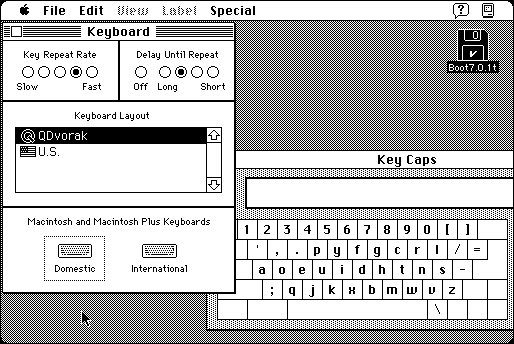

Download
QDvorak.zip (8K) QDvorak repackaged into a zipped hfs disk image and checksum file. The disk image can be mounted with Mini vMac.
QDvorak.sit.bin (4K) QDvorak in the original format.
copyright: Quinn “The Eskimo!”
mod date: Apr 28, 1994
license: “Share and Enjoy”
from url :
Quinn’s Software Development
Dvorak keyboard layout for system 7.

If you find these downloads useful, please consider helping the Gryphel Project, which hosts them.
Here are the md5 checksums for the downloads, signed with Gryphel Key 5:
--------- GRY SIGNED TEXT --------- 2adbb543e6e28e671c18c871f6401016 QDvorak.zip 2c7c75be5001b4b8858098ab6ea0d457 QDvorak.sit.bin ------- BEGIN GRY SIGNATURE ------- Gry/4Xa8CFcUzxdN/FqHrvnG+XK/3OJnrfjaq6vxMlvyEkz26XxizJMfb2wO8+Kq Qr4sm5ybTWnaFPQr5PTWywVEXXje4jGAV1IAn4RCk9AQTRd8gcerhv2W23OvD56U Ax9vrl8CLknp9bLVC9oZHcvylOangJT0tL3SxX8W3yS+luhkmI4a7KRAg+oRUScn -------- END GRY SIGNATURE --------